Scenario · Proposal for Mango
From the live laredoute.fr packshots, we dressed 10 real Mango looks on 5 house faces: 50 photoreal on-model images, for about $16 of compute, in minutes, with no studio, casting or sample.
Every image was checked by hand against its source packshot. We built it on your own Mango products, captured from laredoute.fr, so you can judge it on your own catalog, with a human-QA gate before anything publishes.
Emmanuel de Maistre
Cofounder & CEO, Scenario
Built on real Mango garments captured from laredoute.fr, dressed on five Scenario-designed faces. The grey-studio backdrop is the verified floor; editorial environments and market localization sit beside it as a labelled capability. Every garment shown is a real Mango product. Faces are AI-generated.
The problem
On-model imagery sells. The constraint is never the picture, it is the physical production behind it: book a body, a photographer, a studio, hair, make-up and styling, ship samples, then do it again for the next drop, the next market and the next of thousands of SKUs.
We are deliberately not putting invented percentages on those last points. They are well-established directional levers; the pilot in this proposal is designed to measure your real figures, not assert ours.
The rest of this document is the proof, its exact boundary, and the two things any enterprise team checks before rolling something out: rights and security, plus the human-QA step before anything publishes. We built it on your own catalog so you can judge it on your own product.
The proof
We took Mango's catalog on laredoute.fr, read 99 live products, selected 10 real looks (6 single pieces plus 4 multi-piece combinations, 15 garment images in all) and dressed 5 Scenario-designed house models in every look. That is 50 on-model images, plus real motion clips, all from your own products.
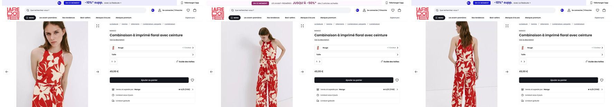
| Step | Model | What it does |
|---|---|---|
| 1 · Master | GPT Image 2 | Generates one full-body studio house model per casting (~$0.60, ~45s). |
| 2 · Try-on | Scenario Try-On | Dresses that model in a garment packshot (~$0.15). Up to 11 garment images at once, so a 2 or 3 piece outfit is dressed in a single pass. |
| 3 · Motion | Seedance 2.0 Fast | Animates the approved still into a 6s 9:16 PDP clip, two-keyframe, so the motion is provably the same garment and face. |
The boundary, stated plainly. What you see here is one frontal hero per look, one held pose per identity, on a seamless grey backdrop. Back views, multiple angles and alternate poses per model are on the roadmap. Body-size range across the cast is the headline pilot deliverable. They are not implied as done here.
Provenance: the Mango packshots were scraped from laredoute.fr as a one-time evaluation artifact, quarantined from any production claim. In production, the platform runs only on assets you warrant you have the rights to use. See the rights page.
The ceiling
Studio is the floor, not the ceiling. We took the exact verified try-ons and changed only the world around them: same face, same garment, real light, and the city of your choice. This is the art direction the studio grid cannot show, and the gap between a competent PDP factory and a campaign engine.
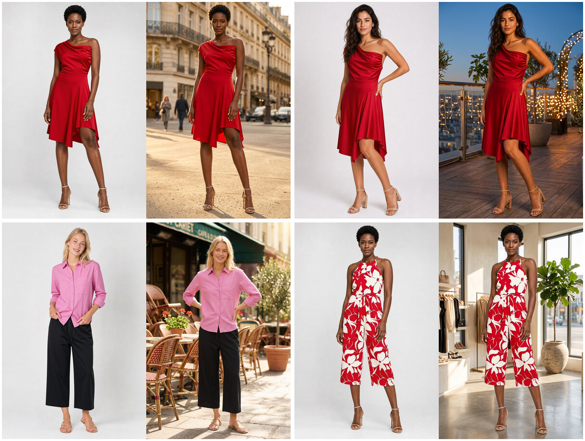
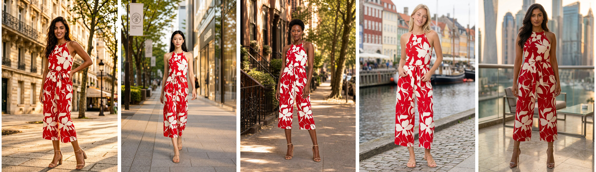
AI capability demonstration. AI-generated environment and AI face. Same identity and garment, preserved from the verified studio still. Not a shipped campaign. The studio grid remains the fidelity proof; this is the labelled "what it can look like" layer.
Proof 1
Ten looks down, five castings across. A diverse cast (Spanish, East Asian, Black, Northern European, South Asian) for every product, with no casting call, travel or re-shoot. Swap the wearer, keep the garment.
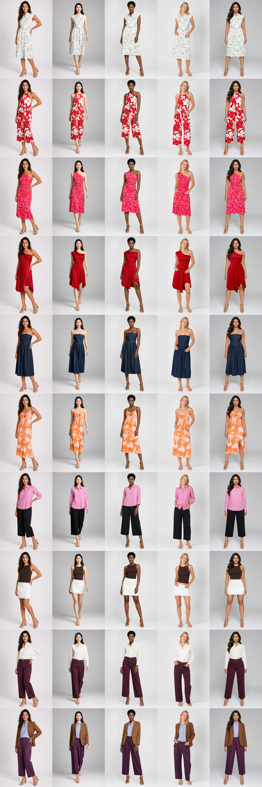
honesty note All five models share one slim build here. Body-size, age and fit inclusivity, the dimension that actually drives fashion returns, is the headline pilot deliverable, not yet proven across the cast.
honesty note Each model holds one pose across its looks. Varied poses per model is a re-pose capability, shown on the next page, not a five-pose claim.
Proof 2
A reusable, identity-consistent house model is the asset a lookbook or a PDP carousel needs. Here is one face (M5) across all ten Mango looks, the floral jumpsuit included, from a single base shot.
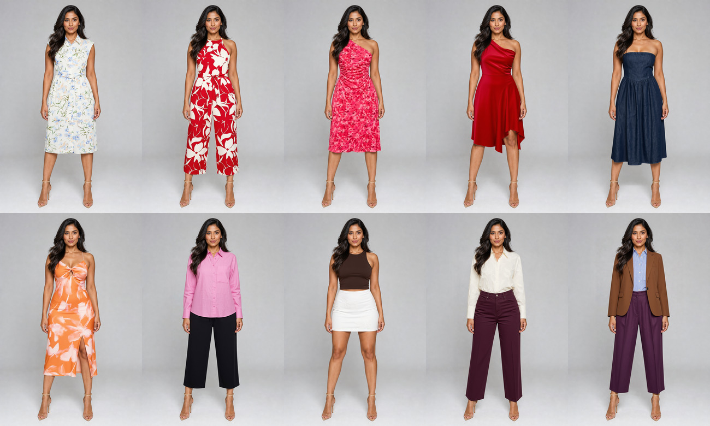
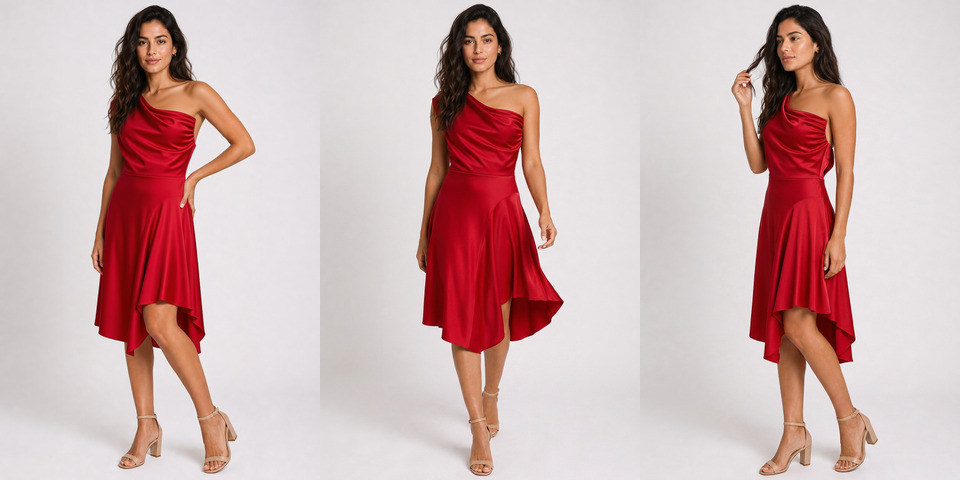
Proof 3
The fair test of try-on is whether it survives a zoom. These were checked by hand against their source packshots.
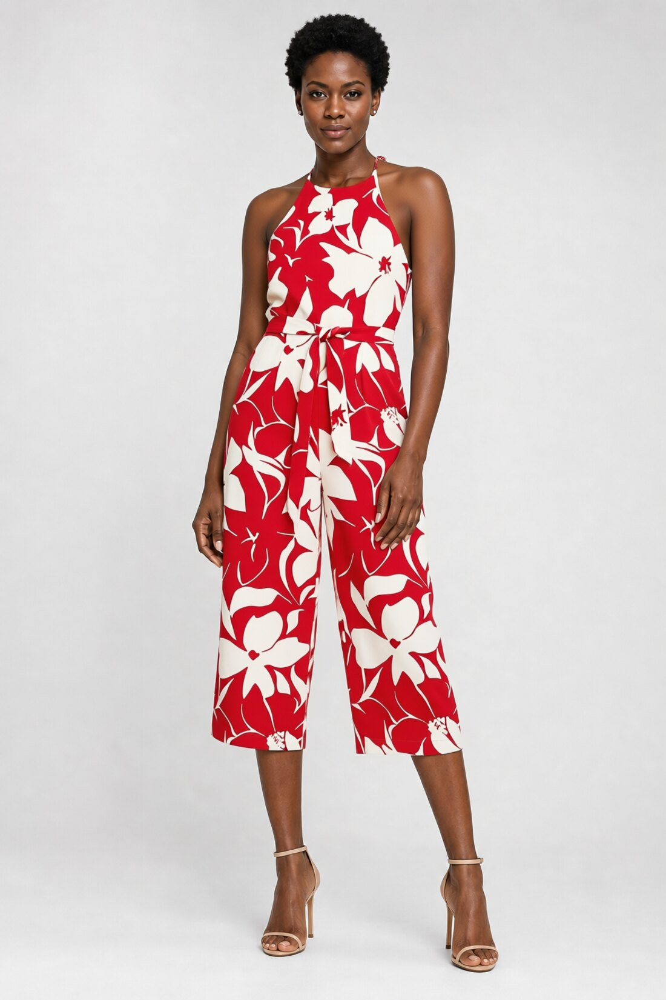
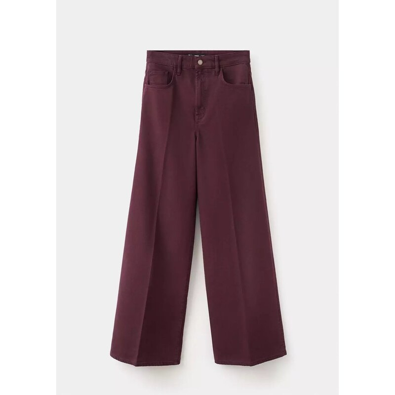
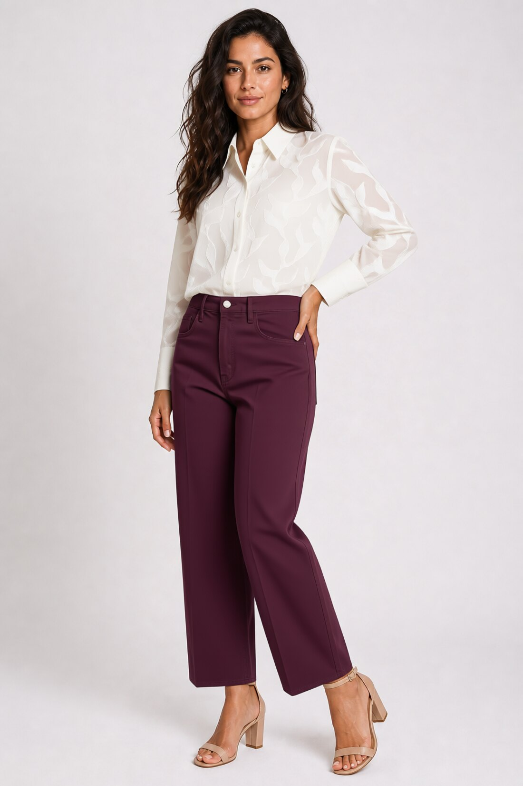
The C9 bottom is a real burgundy wide-leg trouser, sold under the misleading name Jean large. The try-on reproduced that unusual colorway correctly. The only honest note: the source's very wide flare rendered slightly straighter. That is a sourcing and metadata lesson, not a Scenario miss, and a lazier deck would have wrongly confessed it as one.
Why a human-QA gate is mandatory, not optional. Every fidelity finding in this deck was verified against the source packshot at zoom by a named reviewer. The dangerous failure mode in try-on is never visible breakage; it is silent substitution, an attractive photoreal image of the wrong product. The gate exists to catch exactly that before anything publishes, on hard, patterned or cropped SKUs especially.
Rights and IP
This page is honest about what is built and what is pilot work. Every garment in this deck is a real Mango product, so the rights position is clean by construction, not a separate proof to manufacture.
Every look here is a real Mango garment, captured from your live listings on laredoute.fr and dressed on the house cast. There is no third-party-rights question on the garment: it is all your own product.
The Mango packshots used here were captured from laredoute.fr as a one-time evaluation artifact, quarantined from any production claim. In production you feed only assets you warrant you have the rights to use.
These are AI-generated faces, and you own all Generated Assets (MSA 5.3). Scenario indemnifies authorized platform use against third-party IP claims; it does not indemnify the content of the generated output, which is why the human-QA gate and rights-clean inputs are the control. We share our position on EU AI Act transparency and French advertising disclosure. Real, contracted talent remains an option.
This is what turns an interesting demo into something you can actually deploy. Because every garment shown is your own product, the rights position is clean by construction.
Security and scale
Scenario is a platform your teams operate, not a consultancy that runs your catalog. It sits between your PIM and your PDP.
PIM / DAM → packshot in → Scenario (master · try-on · motion) → on-model asset keyed to SKU → PDP
Full enterprise terms at scenario.com/enterprise. SLA and support tiers are set in the Order Form.
The numbers
50 on-model images across a 5-casting cast for about $16 of compute, in minutes. Roughly $0.15 per try-on. A new casting costs about $0.60 (one master) plus ~$0.15 per swap, so representation across faces is a parameter, not a budget line. The appendix shows the full build summing.
Compute is cents. The honest fully-loaded Scenario cost per on-model image is compute plus human art-direction, QA and retouch minutes at the accepted rate. Hard, patterned or cropped SKUs prove that QA labor is non-zero. Even fully loaded, it lands an order of magnitude below a studio image.
| Line item | Range (per day unless noted) |
|---|---|
| Photographer | $1,000 to $2,000 (up to $5,000+) |
| Model (agency) | $500 to $3,000, plus 20 to 40% agency fee |
| Studio rental | $300 to $2,000 |
| Hair & make-up | $800 to $2,400 |
| Styling | $400 to $1,000 |
| Retouching | $20 to $80 per image |
A lean one-day shoot lands near ~$46 per finished image (about 60 images for ~$2,750). A worked two-day, 200-image shoot lands near ~$96 per image on line items alone, and the sources note that effective per-image cost runs 2 to 3 times the quoted rate once coordination, sample logistics and re-shoots are counted. Set against a Scenario image at cents of compute plus minutes of QA, the order-of-magnitude case does not depend on a single number.
Illustrative ROI (labelled illustrative): shoots avoided per category per year from the cost and speed delta, with a sensitivity range on conversion lift and return reduction. The pilot measures your real figures against your own baseline; we do not assert a conversion percentage here.
Read these as directional, not exact: they are public, third-party benchmarks and rough estimates, methodology and scope vary by vendor, and they are not Mango data. Replace any figure with your own blended cost. Sources: squareshot.com (per-image and one-day-shoot benchmark); blendnow.com and nightjar.so (day-rate line items and the 2 to 3x effective-cost finding). Full citations in the appendix.
What makes this different
Real Mango SKUs from laredoute.fr, hard cases included (prints, satin, denim, a three-piece tailored look), all your own product, not stock demos. You judge it on your own catalog.
Your packshots, your identity-locked house-model library, your pipeline via API/MCP, your data governance, with the rights and security posture (SCCs, EU representative, no-training guarantee, SOC 2 Type II) stated upfront. This clears the procurement, IT and EU-compliance bar that pure-service vendors stumble on.
Every number shown summing, the benchmark cited inline, the motion a real file not a storyboard, the body claim scoped to faces, a colorway conceded as a win, all on your own products.
Image generation, on-model try-on and video in one place, proven by a real on-model turn clip. This is infrastructure, not a one-trick demo.
If you have sat through overclaiming AI demos: this one is proven on your own catalog, with every number shown summing, and the limits stated out loud.
Motion
Five 9:16 on-model clips, one garment (the floral jumpsuit) across all five castings, each generated from an already-approved try-on still via Seedance 2.0 Fast. The clips are two-keyframe interpolations: pose A is the still you inspected, pose B is a re-posed walk of the same garment, so the motion is provably the same garment and the same face, with the garment length pinned at both ends. The drape and hem movement is the part a flat image cannot sell. These cut together into a branded film on the microsite, which also carries one lifestyle beat: the same jumpsuit walking a Paris street, motion grown from the editorial still.
9:16, 720p, ~6s, the everyday PDP and social format. ~$9 per clip.
Two-keyframe mode reuses the approved still as the first frame and a re-pose as the last. No new shoot, no continuity gap, no garment drift.
Stills-to-video on one platform is real, today, removing the last unproven capability from the pitch.
The clips ship as real files in this package (media/video) and play in the microsite. A cross-model morph (one garment moving across faces) is an optional capability, deliberately held behind a garment-shape and face-stability QA pass before it represents the brand. Any additional clip volumes in a rollout are projected at the platform rate (~$6 to $20 per clip), labelled as estimates.
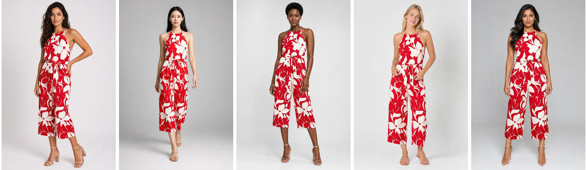
Next step
This is not a concept that needs months to validate. Everything in this deck already runs: the master, the try-on, the editorial placement, the localization and the motion. Scenario has the models, the pipeline and the governance in place today.
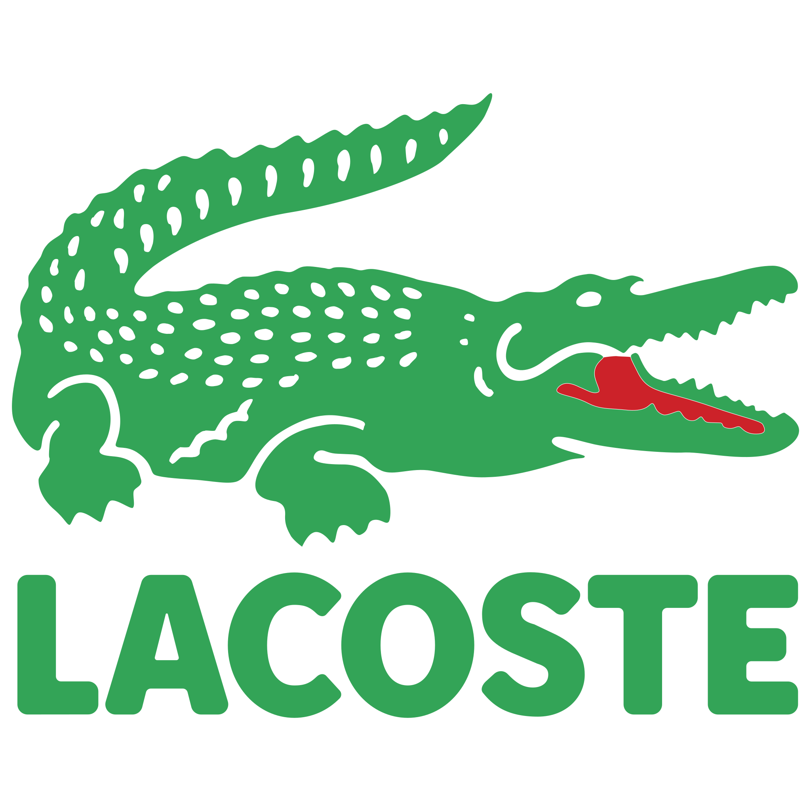
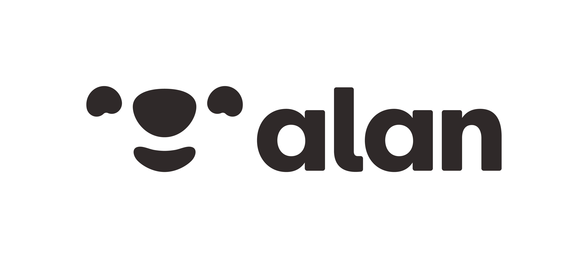
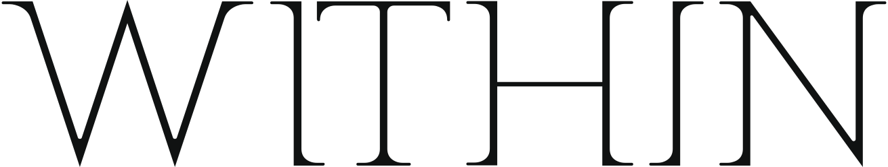
A few of the global brands and agencies already building with Scenario.
We run it, you judge it against your own studio baseline. Days, not quarters.
Emmanuel offers a 30-minute working session to pick the SKU slice and lock the success metric.
Cordialement.
Explore it yourself: scenario.com · the models · the providers · connect over MCP · app.scenario.com · enterprise
Appendix
| Code | Look | Price |
|---|---|---|
| S1 | Robe chemisier imprimé floral | 39,99 € |
| S2 | Combinaison imprimé floral (jumpsuit, the hero look) | 49,99 € |
| S3 | Robe asymétrique imprimé fleuri | 79,99 € |
| S4 | Robe satinée asymétrique | 69,99 € |
| S5 | Robe bustier en jean | 49,99 € |
| S6 | Robe à fleurs cut-out | 79,99 € |
| C7 to C10 | Four multi-piece combinations (shirt + trousers, top + skirt, blouse + trousers, shirt + trousers + blazer) | from 72,98 € |
| Item | Compute (USD) |
|---|---|
| 5 house masters + smoke test (incl. moderation, pose re-fires) | ~$9 |
| 50 try-on swaps (~$0.15 each) | ~$7.50 |
| Total (the 50-image demonstrated set) | ~$16 |
| Re-poses + 5 geo + lifestyle placements | ~$8 |
| 2 geo redos + music bed | ~$2 |
| Motion: 6 clips at ~$9 each | ~$53 |
| Whole build, all-in | ~$79 |
Image master: ~$0.60, ~45s. On-model try-on: ~$0.15, up to 11 garment references. Motion: ~$9 per 6s / 720p clip. A few tens of dollars of compute for the entire build.
Appendix
squareshot.com, "Guide to Product Photography Rates" (per-image and one-day-shoot figures); blendnow.com, "The True Cost of a Professional Photoshoot" (day-rate line items); nightjar.so, "The Real Cost of Product Photography" (effective-cost multiple). Figures are public industry benchmarks, not Mango data; replace with your blended cost.
Garments © Mango, captured via laredoute.fr for one-time evaluation, quarantined from production claims. Faces are AI-generated. Built in Scenario. Prepared for Mango by Scenario, Inc.